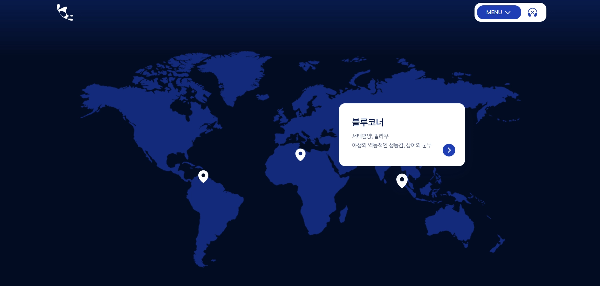
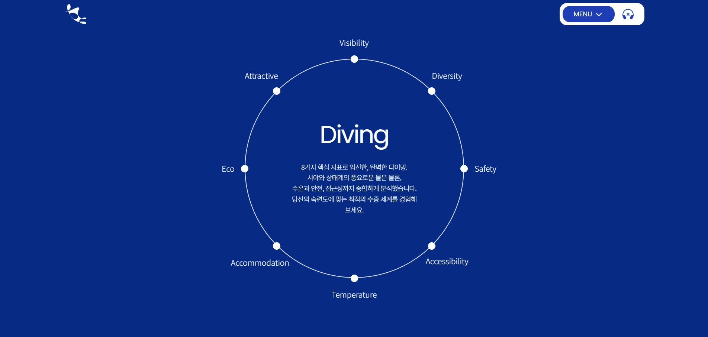
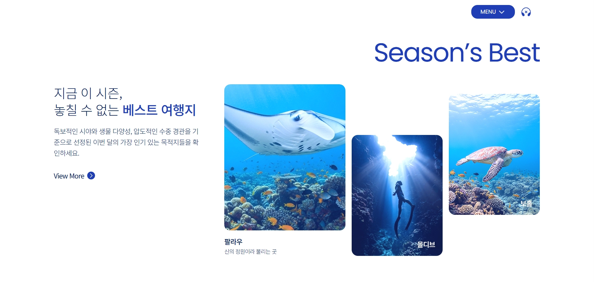
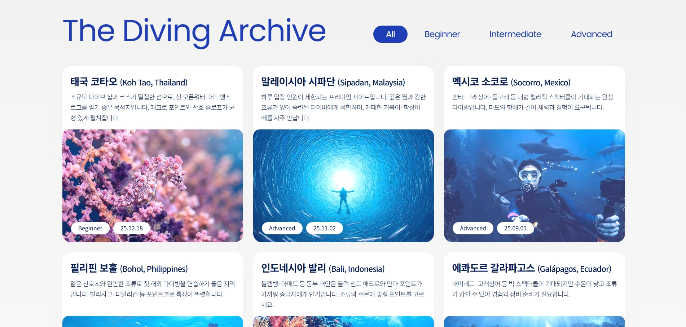

Work Detail
BlueBuddy
일상의 무게를 내려놓고 바다 한가운데서 안식을 발견한다는 메시지 아래, 세계 명소 다이빙 스팟·시즌 추천·입문자 안내·스타일 추천 퀴즈까지 한 브랜드 흐름으로 묶은 반응형 여행·다이빙 소개 웹입니다. 협업 저장소 기준 배포 페이지를 참고해 구성했습니다.
프로젝트 개요
BlueBuddy라는 여행·다이빙 브랜드를 전제로, 그레이트 블루홀·샤크 욜란다 리프·블루코너 등 대표 포인트를 카드 형태로 소개하고 Season’s Best(팔라우·몰디브·보홀 등 시즌 추천), 입문자용 안내 문구, Find Your Diving Style 형태의 스타일 추천 흐름 등으로 이용자가 목적지와 콘셉트를 빠르게 파악하도록 배치했습니다.
페이지별 담당 범위
- Main Page — 기획 · 디자인 · 퍼블리싱
- BlueBuddy — 기획 · 디자인 · 퍼블리싱
- About Diving — 디자인
- Scuba Diving — 디자인
- Free Diving — 디자인
- Diving Journey — 디자인 · 퍼블리싱
- Diving Archive — 디자인 · 퍼블리싱
- Community — 디자인
- Spot 상세 페이지 — 디자인 · 퍼블리싱
그 외 담당 업무
- 레이아웃 및 퍼블리싱 공통 컴포넌트 정의 및 재사용
- 팀 협업 배포 환경 구축 및 관리
- 협업 배포 환경(GitHub Pages)에서 경로·리소스가 깨지지 않도록 상대 경로와 파일명 규칙 통일
- 호스팅 구축 및 관리
기획 의도
라이브 사이트와 동일하게, 첫 화면에서 브랜드 톤(고요·탐험·미지의 아름다움)을 잡고 이어서 시각적으로 강한 포인트(블루홀·리프·코너)로 시선을 이동시킨 뒤, 시즌·입문·커뮤니티로 내려가며 행동 동기가 생기도록 섹션 순서를 맞췄습니다.
- 히어로 카피로 감성·브랜드를 고정하고, 명소 카드로 구체적 이미지를 제공
- Season’s Best로 “지금 가기 좋은 곳”을 한눈에 묶어 탐색 비용을 줄임
- 입문자 섹션과 스타일 찾기로 문턱을 낮추고 체류 시간을 확보
구현 방식
시맨틱한 섹션 구분과 반복 카드·타이포 리듬을 우선했고, 인터랙션과 레이아웃 보조는 jQuery 및 공통 스크립트 패턴으로 정리했습니다. 이미지·카피 밀도가 높은 구간은 스크롤 구간별 여백과 대비를 맞춰 가독성을 유지했습니다.
- 브랜드 로고·히어로·카드 그리드 등 반복 패턴을 재사용 가능한 클래스 단위로 마크업
- 협업 배포 환경(GitHub Pages)에서 경로·리소스가 깨지지 않도록 상대 경로와 파일명 규칙 통일
- 의미 있는 제목 계층과 대체 텍스트로 기본 접근성 확보
사용 툴
시안·그래픽 작업과 코드 작성에 사용한 도구입니다.
작업물 미리보기
전체 화면은 상단 Live site 링크에서 확인할 수 있습니다. 아래 썸네일은 팀 프로젝트 작업물 중 직접 작업한 페이지 일부입니다.




회고
여행·다이빙 분야는 이미지와 문장의 밀도가 동시에 올라가기 쉬워, 한 화면에서 “브랜드 한 줄”과 “구체적 목적지”가 서로 밀지 않도록 간격과 위계를 반복해서 조정했습니다. 협업 배포 URL을 단일 소스로 삼아 카피·섹션 구조를 맞추었고, 이후 스크린샷 자산만 보강해도 설득력이 높아지도록 문단 구성을 단순하게 유지했습니다.